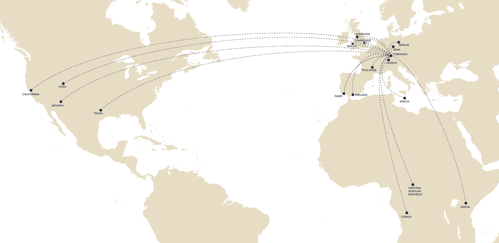
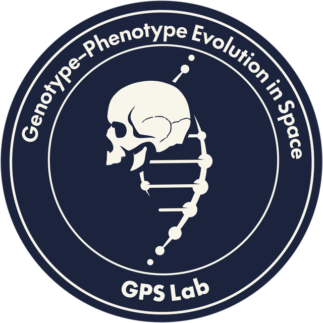

Based at the Human Origins Cluster of Excellence at the University of Tübingen, we study how ecology, demography and culture have shaped the genetic, biological and cultural diversity of humans and other hominins, across space and through time.
The Genotype-Phenotype Evolution in Space (GPS) Lab is an independent junior research group at the Human Origins Cluster of Excellence, University of Tübingen.
We investigate the ecological and social drivers of the diversity of ways in which humans live and have lived throughout our evolution, and how this diversity has shaped our genetic, biological and cultural makeup.
To do this, we combine methods and data from population genetics, computational modelling, archaeology and field research with hunter-gatherer communities, mainly in the Republic of Congo, working alongside collaborators around the world.

We ask broad questions about human origins and evolution, and about the causes and consequences of evolutionary processes more generally. Some of them include:
Bodies that have funded our research include:

We welcome curious, motivated people interested in MSc theses, PhD projects, postdoctoral fellowships (DFG, Humboldt, MSCA) and internships.